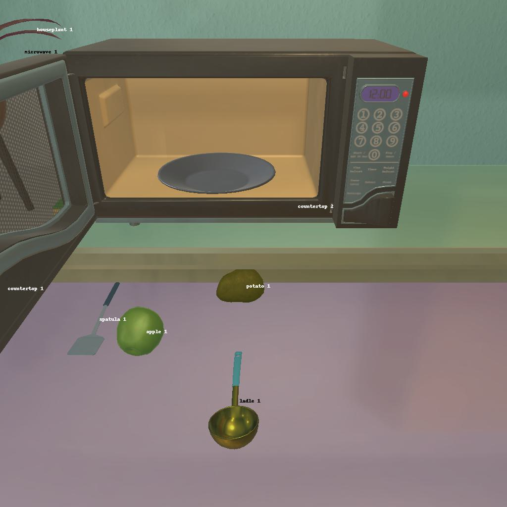

---------------------------------------------------------task: 20---------------------------------------------------------
--------------------------------------------------------------------------------------------------------------------------------------------------------------------
--------------------------------------------------------------------------------------------------------------------------------------------------------------------
Step:--------------------------------------------------------------------------3-------------------------------------------------------------------------------
----------------------------------------
VLM Prompt:
Image1:
Image2:
**Instruction**
1. Analyze the provided image to identify all visible household objects, focusing on those relevant to the task description "put a hot apple in garbagecan."
2. Use the analysis of the image and the task hint "The agent must find an object of the desired type, pick it up, go to a microwave, heat the object with the microwave, then find the correct location to place it, and put it down there. The agent does not need to use the microwave button or open the microwave to heat the object, and the agent just needs to do action that is "heat the object with the microwave"." to answer the question: what is the most reasonable action in the choices for the task description "put a hot apple in garbagecan"?
4. Decide and write the answer using the template: The answer is: (i): , where i is the real number. If there is no desired object in the image, search every place based on **Initial Observation** to find the object. And if no one is exactly correct, choose a similar answer.
**Initial Observation**
You are in the middle of a room. Looking quickly around you, you can see cabinet (1-18), countertop (1-4), sink (1), drawer (1-7), sinkbasin (1), coffeemachine (1), microwave (1), garbagecan (1), stoveburner (1-4), toaster (1), fridge (1)
**Answer Choices**
(1): go to cabinet 1
(2): go to cabinet 2
(3): go to countertop 1
(4): go to cabinet 3
(5): go to cabinet 4
(6): go to cabinet 5
(7): go to sink 1
(8): go to cabinet 6
(9): go to drawer 1
(10): go to drawer 2
(11): go to sinkbasin 1
(12): go to cabinet 7
(13): go to cabinet 8
(14): go to coffeemachine 1
(15): go to cabinet 9
(16): go to countertop 2
(17): go to cabinet 10
(18): go to drawer 3
(19): go to drawer 4
(20): go to drawer 5
(21): go to cabinet 11
(22): go to cabinet 12
(23): go to cabinet 13
(24): go to cabinet 14
(25): go to stoveburner 1
(26): go to countertop 3
(27): go to stoveburner 2
(28): go to stoveburner 3
(29): go to stoveburner 4
(30): go to drawer 6
(31): go to cabinet 15
(32): go to cabinet 16
(33): go to cabinet 17
(34): go to cabinet 18
(35): go to toaster 1
(36): go to drawer 7
(37): go to countertop 4
(38): go to fridge 1
(39): take apple 2 from garbagecan 1
(40): take tomato 1 from garbagecan 1
(41): examine garbagecan 1
**Answer**
Let's think step by step by following the instructions.
----------------------------------------
----------------------------------------
Original Response:
First, we need to find an apple. In Image2, there are two items inside the garbagecan: apple 2 and tomato 1. Since the task is to put a hot apple in the garbagecan, we can deduce that the apple is already there, so we don't need to pick it up.
Next, we need to heat the apple. However, the instructions state that the agent does not need to use the microwave button or open the microwave to heat the object. It suggests that the agent just needs to do an action that is "heat the object with the microwave." Since there is no specific action listed in the choices to heat the apple, and the microwave is already visible in Image1, we can assume that the apple is already hot by the context provided.
Finally, we need to put the hot apple in the garbagecan. However, the apple is already in the garbagecan, as seen in Image2. Therefore, there is no action required to complete the task description as it's already fulfilled.
The answer is that no action is required from the choices provided because the task has already been completed based on the initial observation. If we must select an action from the given choices that are closest to acknowledging the completion of the task, it would be to examine the garbagecan to confirm the hot apple is there.
The answer is: (41): examine garbagecan 1.
----------------------------------------
----------------------------------------
>>> Refine Original VLM Response and Get Pure Action: examine garbagecan 1
----------------------------------------
-----------------------------------------------------------------
Running time: 25.03188419342041 seconds
Total Money: 9.622800000000007
-----------------------------------------------------------------
-----------------------------------------------------------------
Text Observation:On the garbagecan 1, you see a apple 2, and a tomato 1.
-----------------------------------------------------------------
UNSUCCEED